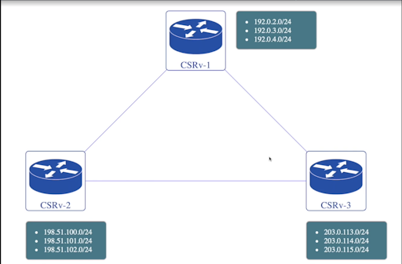
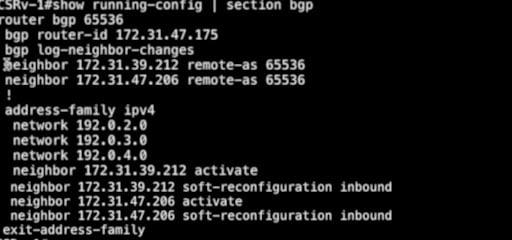
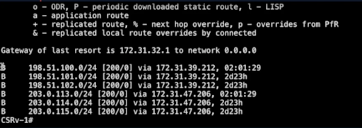
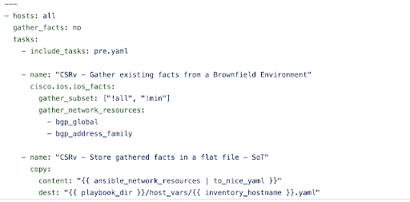
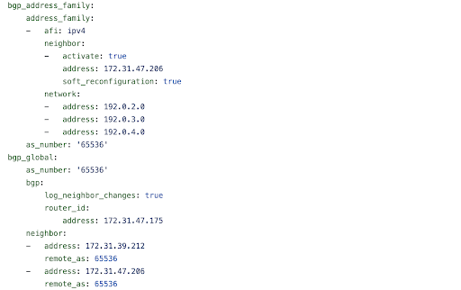
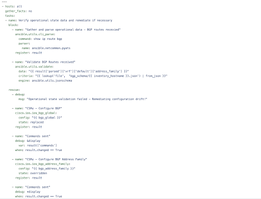
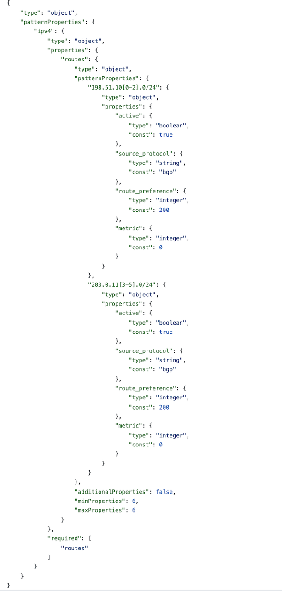
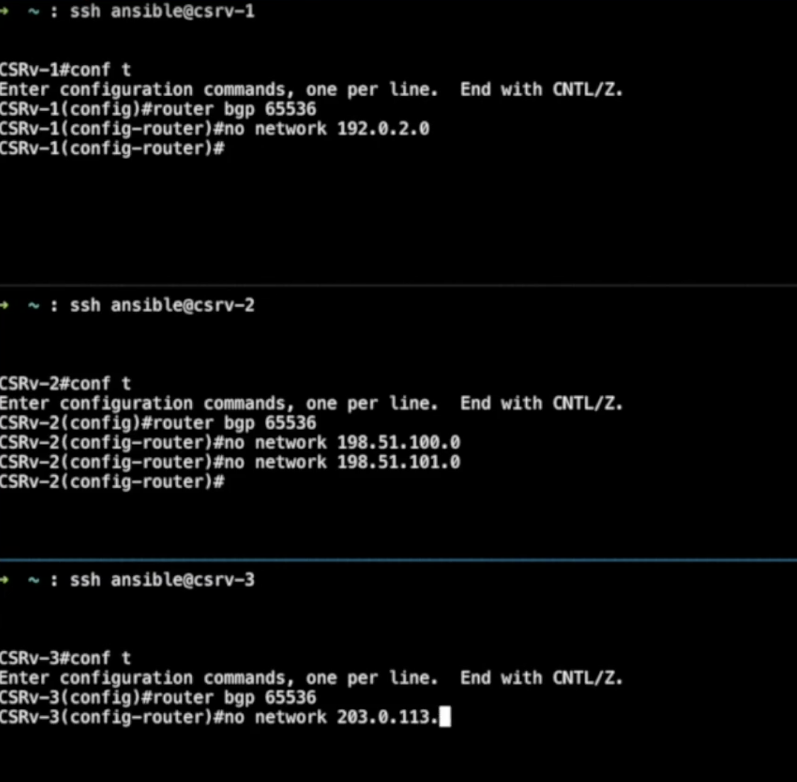
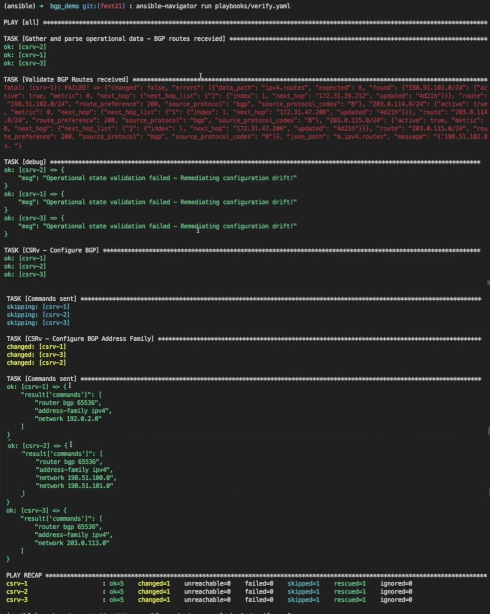

Part 2: Use case of operational state assessment using ansible.utils collection
In ansible.utils, there are a variety of plugins which we can use for
operational state assessment of network devices. I overviewed the
ansible.utils collection in part one of this two part blog series. If
you have not reviewed part one,
I recommend you do so, since I will build on this information in this
part two blog. We will see how the ansible.utils collection can be
useful in operational state assessment as an example use case.
In general, state assessment workflow has following steps:
How can ansible.utils collection help in this workflow?
The ansible.utils collection makes it easier to retrieve and parse the
data so it can then be further assessed from a structured format.
Retrieving operational state in structured format using Ansible.utils.cli_parse
This module is available as ansible.utils collection. It has a variety
of parsers which help to parse CLI output or text output. It can work
with multiple remote hosts like network, Linux, or windows.it. It
supports multiple parsing engines and it is extensible which means you
can create your own parsing engine. It is a single task to run a
command, parse and set facts.
Before the utils collection was available, we would need to write three
different tasks to run commands, parse the output from command and set
facts. But thanks to cli_parse we only have one task which will return
structured data from the "show command"
output.
Let's see an example of ansible.utils.cli_parse task:
tasks:
- name: Run a command and parse results
ansible.utils.cli_parse:
command: show interfaces
parser:
name: ansible.utils.xxxx
set_fact: interfaces
In this task we need to provide a command which will execute on the
device. Parser, which is a subplugin of cli_parse, plugin.set_fact sets
the converted structure in the interfaces key. We can then refer to the
interfaces key in our playbook.
The above task will perform following operation:
- Run the command on the device
- Parse using the 'xxxx' engine
- Use a default template folder
- Set parsed data as fact
- Return command output as stdout
Currently ansible.utils.cli_parse plugin has following parsers:
-
ansible.utils.textfsm: Python module for parsing semi-formatted
text
-
ansible.utils.ttp: Template based parsing, low regex use,
jinja-like DSL
-
ansible.netcommon.native: Internal jinja, regex, yaml without
additional 3rd party libraries required
-
ansible.netcommon.ntc_templates: Predefined textfsm templates
packaged as python library
-
ansible.netcommon.pyats: Cisco Test Automation & Validation
Solution (11 OSs/2500 parsers)
-
ansible.utils.from_xml: convert XML to json using xmltodict
All of the generic parsers are part of the ansible.utils collection and
all network-related parsers are part of the ansible.netcommon
collection.
Validating structured data and report errors using ansible.utils.validate
The Ansible.utils.validate module is a new module available as part of
the ansible.utils collection which works with all platforms. It has
extensible engine support and currently works with the jsonschema
validation engine which uses the jsonschema python library underneath.
It is a single task, which reads structured data and validates it
against the data model provided in the task. This task will report
success or error in case the data is valid or invalid as per the
schema.
Let's see an example of ansible.utils.validate task:
tasks:
- name: Validate structured data
ansible.utils.validate:
data: "{{ input_data }}"
criteria:
- "{{ lookup('file', './criteria.json') | from_json }}"
engine: ansible.utils.xxxx
In this task we need to provide data which is supposed to be structured
data. Criteria is a list of criteria. Since currently we are using
jsonschema, we have criteria in json format. Engine is a sub-plugin of
the top level validate plugin. Here it is ansible.utils.jsonschema.
Again, you can write your own engine as it is extensible.
The above task will perform following operation:
- Reads the input JSON data and the criteria for data (schema mode)
- Validate using the 'xxxx' engine
- Returns list of errors if data does not conform to the schema criteria
Currently ansible.utils.validate plugin supports following validation
engine:
-
ansible.utils.jsonschema: Python module to validate json data against a schema.
Now let's use the above plugins from ansible.utils to see how we can
use them in actual scenarios. In this example we will see how to use
ansible.utils to fetch BGP operational state data, validate it against
predefined json schema and also remediate configuration drift when
detected.
For this scenario consider we have three CSRv routers which are running
cisco ios xe. All of them are BGP neighbors to each other and advertise
three networks each.

Lets check running configuration and operation state data related to BGP.

Let's check the CSRv1 node. Lets execute command show running-config | section bgp.
As you can see it has two neighbors configured, where
both of them have the same Remote AS, so they are IBGP neighbors. The
neighbors are activated and soft reconfiguration inbound is enabled on
them. This node also advertises three networks.
Now let's execute the command show bgp summary.

The above screenshot tells us the neighbor relationships with the other
two nodes established and the current node receiving 3 prefixes from the
other two nodes.
Now let's validate it using routing table entries.
Lets execute command show ip route bgp.

The above screenshot shows route table entries from node 1. As you can
see, this node is aware of six routes, with the next hop being the
respective BGP neighbors advertising them.
Similarly we have configured CSRv2 and CSRv3.
Now let's check the playbooks which we are using in this example with
detailed steps.
Checkout this code
if you want to learn more details.
Playbooks are divided into two parts:
- Gather facts and store them in a yaml file as the Source of Truth (SOT)
- Validate structured data against SOT and rectify drift if it is detected
Gather facts and store it in a yaml file for SOT
Let's check the content of facts.yaml.

In the first task we are gathering bgp_global and bgp_address_family
facts from target devices. In the second task we are storing them in a
flat file under the hostvars directory. These files will act as SOT
(source of truth) for BGP config on target devices.
Lets run the above playbook with ansible-navigator run playbooks/facts.yaml using this command.
See ansible-navigator docs for more details.
How does this data look after execution of the playbook? Let's check
playbooks/host_vars/csrv-1.yaml.

Validate structured data against SOT and rectify drift if it is detected
In this step we will inspect BGP operational state data for all the
nodes in our topology and then determine if they are running as expected
or if there is any configuration drift.
Now let's see the
playbooks/verify.yaml
playbook which will validate and rectify drift if it is present.

In the first task we have used the ansible.utils.cli_parse plugin to
execute the show ip route bgp command on the target device and then
pass the output of this command to pyats parser.
The pyats parser then converts the output to structured data which is
stored in the result variable.
In the next task we pass the value in the result variable along with a
predefined schema to the ansible.utils.validate plugin. The plugin
then compares the data against the schema or the criteria using the
jsonschema engine. Each node has a schema file that defines the prefix
ranges which they received from the other two neighbors .
As we saw from the topology and the CLI that these nodes are supposed to
receive six routes (three in total) from each of the neighbor nodes. Now
these prefixes are represented as patterns in the schema along with
other properties like source_protocol, route_preferences, metric and
active state.
The schema also sets the additional properties to false and defines
minimum and maximum number of properties as six. This ensures that
validating against the schema will always tell us whether the devices
are receiving exactly the set of routes which they are supposed to
receive or not.
Following is the example of a
schema file
for node CSRv1.

Let's check further tasks of
verify.yaml
If the schema validation in the second task fails, the playbook enters
the rescue section. This is where we used the BGP resource modules to
enforce the SOT which we have saved previously in yaml files on the
target devices. The end result will be remediating any configuration
drift which causes failure in operation state validation.
If we execute the verify.yaml playbook with the ansible-navigator run playbooks/verify.yaml
command, as we have not made changes to any
of the target devices, we see that they are working as expected and
schema validation passes. See
ansible-navigator
docs for more details.

Let's manually introduce erroneous changes on all devices. Then we
will run the same playbook again and see how it behaves. Let's remove
the routes to make the erroneous changes they are
advertising.

Now we have made changes in all the routers. Let's run the playbook
again with ansible-navigator run playbooks/verify.yaml.
This time the schema validation fails. Remediation tasks are executed
and they add facts that are missing prefixes on all three nodes. Let's
take a detailed look into this.

The first task, as usual, fetches the output of the show command and
converts it to structured data.
The second task fails because the schema validation fails with multiple
errors. The data doesn't match the constraints defined in the schema.
This causes the remediation tasks to execute one by one.
After the remediation tasks are complete, the configure BGP task showed
no changes because we did not make any changes to the BGP global
attribute.
The second one is where the BGP address family detects the drifts and
reconfigures the missing prefixes.
As we can see in the commands sent for all the target devices, the
playbook adds facts to the routes that are deleted.
If we run this playbook once again it will be idempotent and report no
changes, thereby indicating everything working as expected.
In a production environment, this playbook can be triggered based on
external events or also can be scheduled as a periodic job in Red Hat
Ansible Automation Platform's Automation controller to ensure compliance
with the expected operational state.
Takeaways & Next Steps
As shown above, the ansible.utils collection:
- Makes operational state assessment easier, complementing Ansible
Automation Platform's configuration management capabilities.
- Acts as a single entry point for gathering the operational state of
the entire inventory.
- Provides a standardized way to define and validate the operational
criteria as a structured data model.
- Adds the steps for operational state assessment as a workflow
template in Automation controller which can trigger other events,
like running a playbook for automated remediation or reporting to an
external tool, etc.